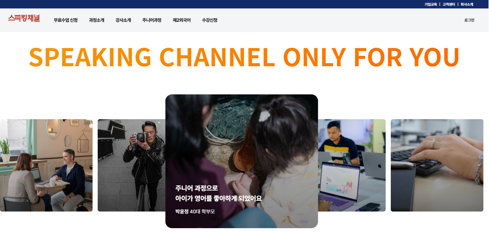
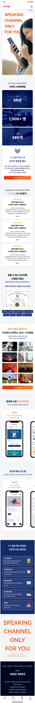
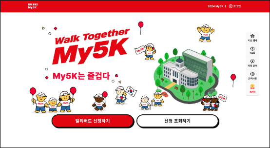
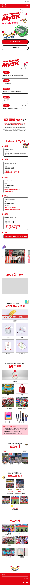
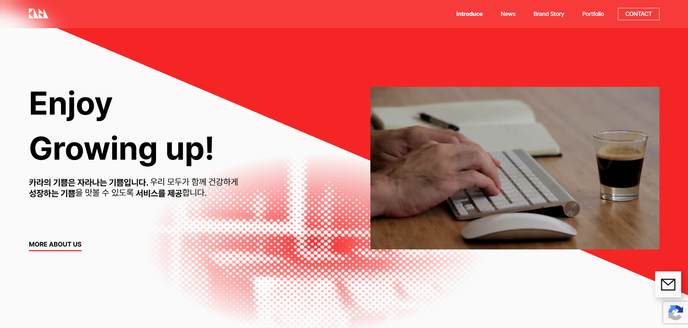
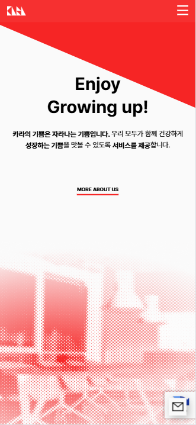
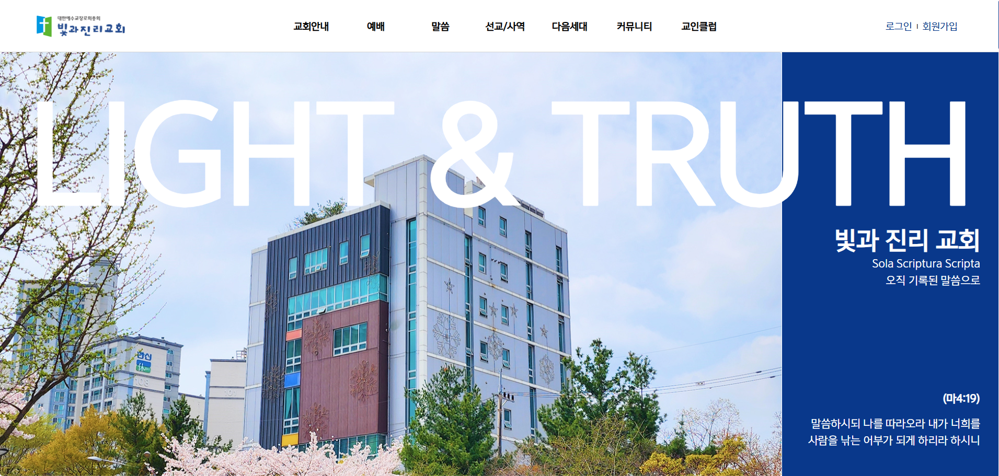
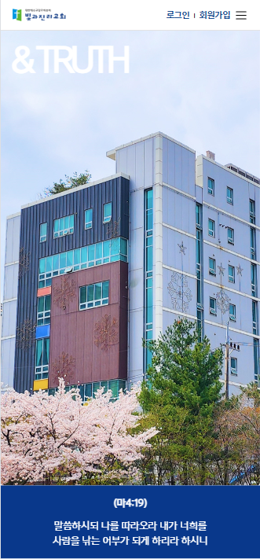
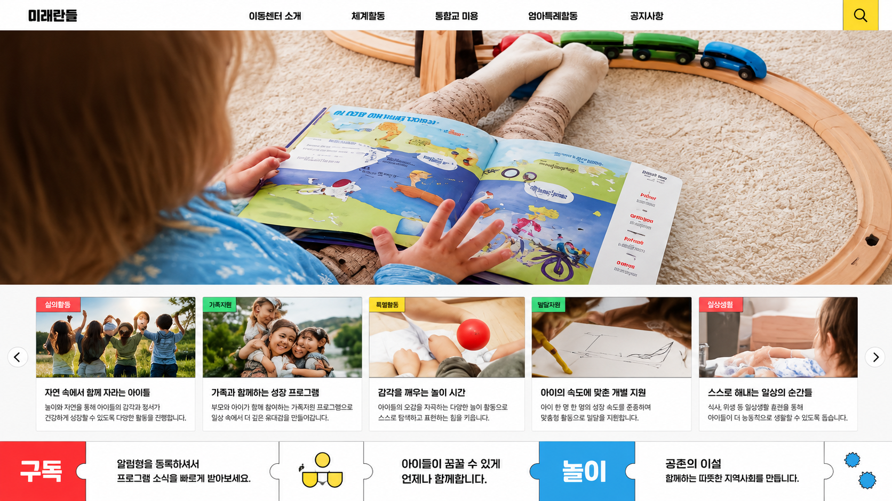
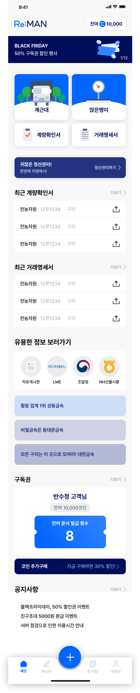

HTML5
시맨틱 마크업으로 화면 구조를 설계하며 웹 표준과 접근성을 고려합니다.
HELLO, I'M SOYEONG.
01 / WHAT I USE
반응형 UI 구현부터 공통 스타일 설계, 개발 협업까지 연결합니다.
시맨틱 마크업으로 화면 구조를 설계하며 웹 표준과 접근성을 고려합니다.
SCSS 모듈화와 공통 컴포넌트·스타일 가이드로 재사용성과 유지보수를 고려합니다.
JavaScript와 jQuery로 동적 UI를 구현하고 화면 흐름과 기능 연결을 점검합니다.
컴포넌트 구조를 이해하고, 기존 React 프로젝트의 UI를 수정·유지보수한 경험이 있습니다.
다양한 해상도에 맞춘 웹·모바일 UI를 구성하고 화면 간 일관성을 살핍니다.
02 / FEATURED PROJECTS
웹·모바일 서비스부터 기업 홈페이지까지,
다양한 UI 퍼블리싱 경험을 담았습니다.


RESPONSIVE WEBSITE
기획 검토부터 40–50페이지 규모의 반응형 UI 퍼블리싱까지 담당했습니다.


RESPONSIVE WEBSITE
My5k 아카이브를 포함한 웹사이트 화면을 반응형으로 구현했습니다.




RESPONSIVE WEBSITE
SCSS를 활용해 20–30페이지 규모의 반응형 웹 UI를 구현했습니다.


WEBSITE
기획·디자인 검토부터 40–50페이지 웹 UI 퍼블리싱까지 수행했습니다.
현재 운영 종료 · 대표 화면 이미지로 대체

MOBILE WEBSITE
70–80페이지 규모의 모바일 웹 화면을 SCSS 기반으로 구현했습니다.
현재 운영 종료 · 대표 화면 이미지로 대체
MOBILE WEBSITE
기획 검토부터 50–60페이지 모바일 UI 퍼블리싱까지 담당했습니다.
현재 운영 종료 · 대표 화면 이미지로 대체
03 / ABOUT ME
디자인과 개발 사이에서
완성도 높은 UI를 만듭니다.
5년 이상 웹·모바일 서비스, 관리자 화면, 기업 홈페이지를 퍼블리싱하며 기획·디자인·개발 사이에서 화면 흐름과 UI 일관성을 검토해 왔습니다.
공통 컴포넌트와 스타일 가이드, SCSS 모듈화를 통해 재사용성과 유지보수를 고려합니다. PHP 개발자와 협업하며 서버 환경에 맞게 화면 코드를 조정한 경험도 있습니다.
Get in touch